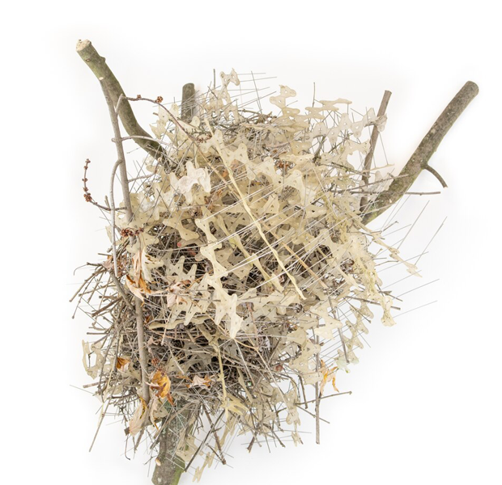
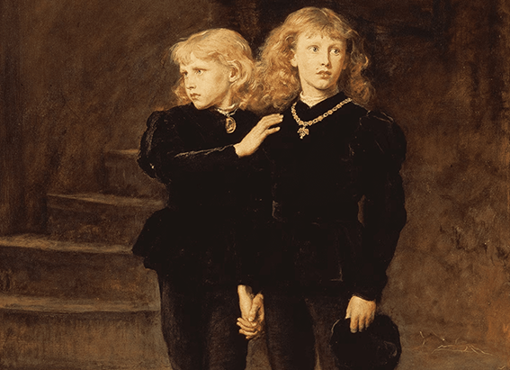
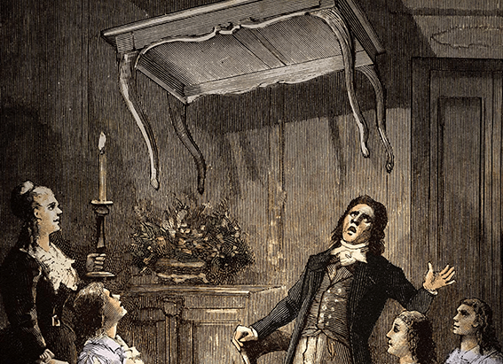

NATIONAL GEOGRAPHIC
'The perfect revenge' Birds are building fortresses from anti-bird spikes
ANIMAL
- 

“They take the stuff we use to try to deter birds, and they make a nest out of it, and then make more birds,” says Auke-Florian Hiemstra, a biologist at Naturalis Biodiversity Center in the Netherlands and lead author of a study on the phenomenon published this month in Deinsea, the online journal of the National History Museum Rotterdam.
“That’s just a brilliant way to fight the system. Nice to see some birds fighting back.”
While birds are a common urban neighbor, city residents don’t always appreciate the droppings and nesting materials our feathered friends leave behind. This has spurred an entire industry of products designed to keep birds off human infrastructure, such as light displays, netting, and even sharp metal spikes.
However, a new study shows that not only are some birds unbothered by long strips of barbs, but they’re actually ripping the skewers off buildings and using them to build armored nurseries for their chicks.
In the Netherlands, two instances so far show that carrion crows coiled the strips so that the spikes faced inward, possibly serving as a base for the nest and helping to bind other nesting materials, such as twigs and dry leaves.
Perhaps this is why, in three separate instances described between 2021 and 2023 from the Netherlands, Belgium, and Scotland, Hiemstra found magpie nests that incorporated anti-bird spikes in the top of the dome. And this is intriguing, because magpies typically construct their roofs out of hawthorn, blackthorn, and rose stems.
'Magpies are nuts'
To be clear, birds build nests from human-made objects all the time. Hiemstra has personally seen nests from various species made out of everything from windshield wipers and headphones to hypodermic needles, cocaine packaging, and condoms.
“So even the wild side of Amsterdam, you will see reflected in the bird nests,” he says. “Almost anything can become nesting material.”
However, for his new research, Hiemstra dived into the scientific literature to find examples of corvids using anti-bird spikes. The first recorded example of this behavior appears to be from 2009 in Rotterdam, but overall the scientists gathered five instances in three countries.
It has also been previously documented that some species, such as cockatoos in Australia, will actively rip anti-bird spikes from their moorings.
However, what makes this new study different is the idea that the magpies, especially, may be using the anti-bird spikes in a functional capacity.
“I’ve seen birds who built on top of the spikes,” which are also used in the U.S., says Karina Sanchez, an urban ecologist at the University of New Hampshire not involved in the study. “But this was my first time seeing the spikes being yanked off of the structure and used in nests.”
Comments :
- john Very good
- john Very good
Leave a Reply
Your email address will not be published. Required fields are marked*
Related posts:
-
Exclusive This is how you solve one of history's greatest cold cases
In the summer of 1483, Edward V and his younger brother Richard entered the Tower of London and were never seen again. Their disappearance has long been laid at the feet of their uncle, Richard III, who has been accused
View article -
What were Marcus Aurelius' rules for life His self-help classic has the answers
The second-century A.D. world of Emperor Marcus Aurelius was in shambles. A great plague ravaged western Europe, as he embarked on a long and bloody war against the Germanic tribes along the Danube frontier.
View article -
‘I hear dead people’ How the world went wild for talking to spirits 100 years ago
The desire to communicate with the dead is probably as old as human history. Ghosts played major roles in ancient cosmologies from Mesopotamia to Greece to China, but seeking out the counsel of the departed was outlawed
View article